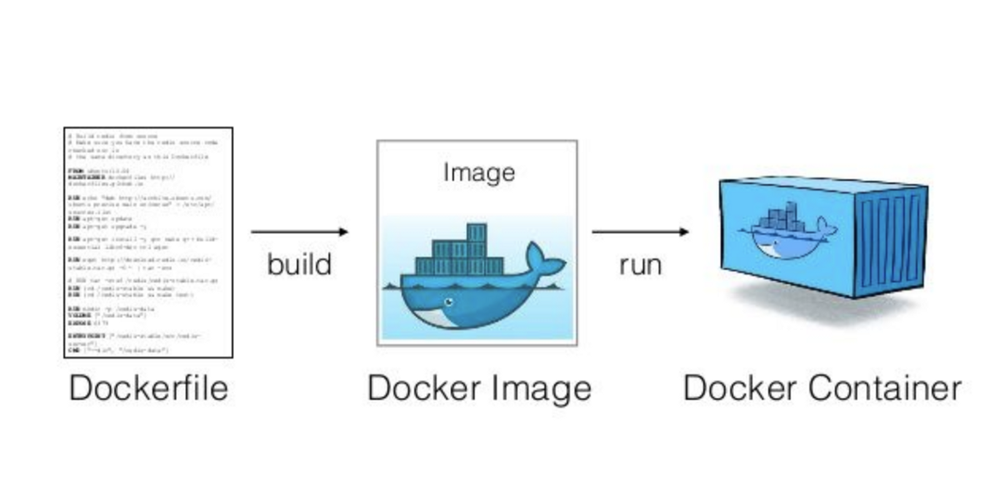

Get started

Image
Image: là 1 thực thể giúp cho docker biết được phải chạy cái ứng dụng như thế nào, cần download những packages, những services, version nào để có thể chạy được cái ứng dụng của mình
Build docker image
Như là mình đọc Doc của docker và làm theo thoi.
- Đầu tiên là cần clone cái source app về để thực hành
- Sau khi clone về thì tiến hành cài đặt các package với npm i
- Run app với node src/index.js
- Từ giờ sẽ tiến hành build image:
- Tạo 1 file Dockerfile với nội dung:
# syntax=docker/dockerfile:1
FROM node:18-alpine
WORKDIR /app
COPY . .
RUN yarn install --production
CMD ["node", "src/index.js"]
EXPOSE 3000
- Sau đó sẽ tiến hành build với lệnh: docker build -t getting-started . hoặc chúng ta có thể gán thêm version cho image bằng cách docker build -t getting-started:v1 .
- Sau khi build image xong ta cos thể dùng lệnh docker image ls để list các image hiện có
➜ getting-started-app ⚡( main) 20.8.0 2 weeks ago
▶ docker image ls
REPOSITORY TAG IMAGE ID CREATED SIZE
getting-started latest 797b932466d3 6 minutes ago 323MB
docker/getting-started latest 3e4394f6b72f 10 months ago 47MB
Trong quá trình học mình có cài Docker destop, tuy nhiên mình để đó ngắm nghía cho nó trực quan hóa thoi, chứ vẫn chỉ nên dùng CLI thay vì thao tái với GUI
run container
- docker ps -a
- docker run -dp 127.0.0.1:3000:3000 getting-started sẽ nhận được tag name là mặc định
- docker run -dp 127.0.0.1:3000:3000 --name hjn4-test getting-started có thể tùy chỉnh name
- docker stop/start <name/id container>
➜ getting-started-app ⚡( main) 20.8.0 2 weeks ago
▶ docker image ls
REPOSITORY TAG IMAGE ID CREATED SIZE
getting-started latest 797b932466d3 47 minutes ago 323MB
docker/getting-started latest 3e4394f6b72f 10 months ago 47MB
➜ getting-started-app ⚡( main) 20.8.0 2 weeks ago
▶ docker run -dp 127.0.0.1:3000:3000 getting-started
25c0441e08acf8dec3be5f83bec74d0900814e60d5b95961a940687f98d4d882
➜ getting-started-app ⚡( main) 20.8.0 2 weeks ago
▶ docker ps
CONTAINER ID IMAGE COMMAND CREATED STATUS PORTS NAMES
25c0441e08ac getting-started "docker-entrypoint.s…" 5 seconds ago Up 4 seconds 127.0.0.1:3000->3000/tcp blissful_fermat
➜ getting-started-app ⚡( main) 20.8.0 2 weeks ago
▶ docker stop blissful_fermat
blissful_fermat
➜ getting-started-app ⚡( main) 20.8.0 2 weeks ago
▶ docker ps -a
CONTAINER ID IMAGE COMMAND CREATED STATUS PORTS NAMES
25c0441e08ac getting-started "docker-entrypoint.s…" 2 minutes ago Exited (0) 5 seconds ago blissful_fermat
➜ getting-started-app ⚡( main) 20.8.0 2 weeks ago
▶ docker run -dp 127.0.0.1:3000:3000 --name hjn4-test getting-started
393b2bbac29d134b92593257138700871bc9568439eb919bbbe93a54d1509abc
➜ getting-started-app ⚡( main) 20.8.0 2 weeks ago
▶ docker ps -a
CONTAINER ID IMAGE COMMAND CREATED STATUS PORTS NAMES
393b2bbac29d getting-started "docker-entrypoint.s…" 6 seconds ago Up 6 seconds 127.0.0.1:3000->3000/tcp hjn4-test
25c0441e08ac getting-started "docker-entrypoint.s…" 2 minutes ago Exited (0) 49 seconds ago blissful_fermat
➜ getting-started-app ⚡( main) 20.8.0 2 weeks ago
▶ docker stop hjn4-test
hjn4-test
➜ getting-started-app ⚡( main) 20.8.0 2 weeks ago
▶ docker start hjn4-test
hjn4-test
➜ getting-started-app ⚡( main) 20.8.0 2 weeks ago
▶ docker stop hjn4-test
hjn4-test
- docker rm <name/id container>
➜ getting-started-app ⚡( main) 20.8.0 2 weeks ago
▶ docker ps -a
CONTAINER ID IMAGE COMMAND CREATED STATUS PORTS NAMES
393b2bbac29d getting-started "docker-entrypoint.s…" 6 minutes ago Exited (0) 5 minutes ago hjn4-test
25c0441e08ac getting-started "docker-entrypoint.s…" 9 minutes ago Exited (0) 7 minutes ago blissful_fermat
➜ getting-started-app ⚡( main) 20.8.0 2 weeks ago
▶ docker rm blissful_fermat
blissful_fermat
➜ getting-started-app ⚡( main) 20.8.0 2 weeks ago
▶ docker ps -a
CONTAINER ID IMAGE COMMAND CREATED STATUS PORTS NAMES
393b2bbac29d getting-started "docker-entrypoint.s…" 6 minutes ago Exited (0) 5 minutes ago hjn4-test
update the application
- Update bằng cách: xóa, stop, cái container hiện tại và phải build image mới, run container mới.
- Mình vẫn chưa tìm hiểu có cách nào khác không, sẽ tìm hiểu sau khi clear hết các task này
share docker application
Nói đơn giản thì là push lên docker hub thoi
➜ getting-started-app ⚡( main) 20.8.0 2 weeks ago
▶ docker tag getting-started hjn4/learn-get-started-from-docker-doc
➜ getting-started-app ⚡( main) 20.8.0 2 weeks ago
▶ docker image ls
REPOSITORY TAG IMAGE ID CREATED SIZE
hjn4/learn-get-started-from-docker-doc latest 797b932466d3 About an hour ago 323MB
getting-started latest 797b932466d3 About an hour ago 323MB
docker/getting-started latest 3e4394f6b72f 10 months ago 47MB
➜ getting-started-app ⚡( main) 20.8.0 2 weeks ago
▶ docker push hjn4/learn-get-started-from-docker-doc
Using default tag: latest
The push refers to repository [docker.io/hjn4/learn-get-started-from-docker-doc]
75de2c3fea36: Pushed
5f73fb1faa67: Pushed
fb74669cf256: Pushed
b76efd4eddd5: Mounted from library/node
fa5569ec60d1: Mounted from library/node
b105890ed2f2: Mounted from library/node
cc2447e1835a: Mounted from library/node
latest: digest: sha256:eba4e266c4935c7889ad252aab3eb871775fa353160568dc1c19666035cf9cce size: 1788
➜ getting-started-app ⚡( main) 20.8.0 2 weeks ago
▶
- Đầu tiên cần gán tag cho image cần push:
docker tag image-name username-dockerhub / repo-name-on-docker-hub : version
-
Chúng ta có thể dùng list các image ra và thấy 1 image mới được tạo ra như trên
-
Kế tiếp là push:
docker push username-dockerhub / repo-name-on-docker-hub
chúng ta có thể tạo thêm version cho image như sau
➜ getting-started-app ⚡( main) 20.8.0 2 weeks ago
▶ docker tag getting-started hjn4/learn-get-started-from-docker-doc:v1
➜ getting-started-app ⚡( main) 20.8.0 2 weeks ago
▶ docker image ls
REPOSITORY TAG IMAGE ID CREATED SIZE
getting-started latest 797b932466d3 2 hours ago 323MB
hjn4/getting-started latest 797b932466d3 2 hours ago 323MB
hjn4/learn-get-started-from-docker-doc latest 797b932466d3 2 hours ago 323MB
hjn4/learn-get-started-from-docker-doc v1 797b932466d3 2 hours ago 323MB
docker/getting-started latest 3e4394f6b72f 10 months ago 47MB
clone container về run sau khi push lên docker hub
docker run -dp 127.0.0.1:3000:3000 --name test-clone hjn4/learn-get-started-from-docker-doc:latest
Note: thường thì ta nên đặt version cụ thể như ngày tháng thay vì để mặc định là latest
Persist the DB
Cái persist volume này sẽ ưu tiên sử dụng hơn bởi vì nó là do docker quản lý, có tính bảo mật hơn là mình tự quản lí
-
docker volume create todo-db Tức là mình tạo ra 1 cái volume để mà lưu trữ data, sao cho các container sau này tạo lên nó sẽ link đến cái volume này nhầm đảm bảo dữ liệu trong lúc tương tác vẫn được lưu trữ.
-
docker run -dp 127.0.0.1:3000:3000 --mount type=volume,src=todo-db,target=/etc/todos getting-started
Các cái như version hay --name đồ thì mình tự tinh chỉnh
➜ getting-started-app ⚡( main) 20.8.0 2 weeks ago
▶ docker volume inspect todo-db
[
{
"CreatedAt": "2023-10-27T13:50:42Z",
"Driver": "local",
"Labels": null,
"Mountpoint": "/var/lib/docker/volumes/todo-db/_data",
"Name": "todo-db",
"Options": null,
"Scope": "local"
}
]
Bind Mount
Toẹt vời trên môi trường dev
docker run -it --mount type=bind,src="$(pwd)",target=/src ubuntu bash
Note: The --mount option tells Docker to create a bind mount, where src is the current working directory on your host machine (getting-started-app), and target is where that directory should appear inside the container (/src).
Điều này giúp mình có thể tương tác tức thì giữa môi trường trong container và host.
docker run -dp 127.0.0.1:3000:3000 \
-w /app --mount type=bind,src="$(pwd)",target=/app \
node:18-alpine \
sh -c "yarn install && yarn run dev"
docker logs -f <container-id>
Multi container apps
Target là mỗi ứng dụng sẽ chạy 1 container riêng lẽ, dễ dàng cho quản lý và update.
- Tạo 1 network để các container có thể tương tác với nhau
docker network create todo-app
- Tạo 1 container MYSQL và attach nó vào network vừa tạo
docker run -d \
--network todo-app --network-alias mysql \
-v todo-mysql-data:/var/lib/mysql \
-e MYSQL_ROOT_PASSWORD=secret \
-e MYSQL_DATABASE=todos \
mysql:8.0
- Confirm
docker exec -it <mysql-container-id> mysql -u root -p
mysql> SHOW DATABASES;
+--------------------+
| Database |
+--------------------+
| information_schema |
| mysql |
| performance_schema |
| sys |
| todos |
+--------------------+
5 rows in set (0.00 sec)
mysql> exit
Xác định địa chỉ IP các container
docker run -it --network todo-app nicolaka/netshoot
dig mysql
; <> DiG 9.18.8 <> mysql
;; global options: +cmd
;; Got answer:
;; ->>HEADER<<- opcode: QUERY, status: NOERROR, id: 32162
;; flags: qr rd ra; QUERY: 1, ANSWER: 1, AUTHORITY: 0, ADDITIONAL: 0
;; QUESTION SECTION:
;mysql. IN A
;; ANSWER SECTION:
mysql. 600 IN A 172.23.0.2
;; Query time: 0 msec
;; SERVER: 127.0.0.11#53(127.0.0.11)
;; WHEN: Tue Oct 01 23:47:24 UTC 2019
;; MSG SIZE rcvd: 44
run app with mysql
docker run -dp 127.0.0.1:3000:3000 \
-w /app -v "$(pwd):/app" \
--network todo-app \
-e MYSQL_HOST=mysql \
-e MYSQL_USER=root \
-e MYSQL_PASSWORD=secret \
-e MYSQL_DB=todos \
node:18-alpine \
sh -c "yarn install && yarn run dev"
có thể dùng docker logs -f <container-id> xem log
- check:
docker exec -it <mysql-container-id> mysql -p todos
mysql> select * from todo_items;
+--------------------------------------+--------------------+-----------+
| id | name | completed |
+--------------------------------------+--------------------+-----------+
| c906ff08-60e6-44e6-8f49-ed56a0853e85 | Do amazing things! | 0 |
| 2912a79e-8486-4bc3-a4c5-460793a575ab | Be awesome! | 0 |
+--------------------------------------+--------------------+-----------+
Docker compose
haizz viết 1 hồi lại thấy Docs dễ hiểu hơn hẳn =.= khum cần phải viết thêm